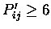

Output from STAMP scans consists of a list of domains and a
corresponding set of scores, lengths and other numbers that can be
used to sort and understand the output.
The format is as follows (see examples/1cmsN_stamp_scan.trans):
% Output from STAMP scanning routine
%
% Domain 1cmsN was used to scan the domain database:
% ac_prot.domains
% 2 fits were performed
% Fit 1 E1= 20.000, E2= 3.800, CUT= 1.000
% Fit 2 E1= 3.800, E2= 3.800, CUT= 4.500
% Approximate fits (alignment from N-termini) were performed
% at every 5 residue of the database sequences
% Transformations were output for Sc= 2.000
%
% Domain used to scan
# Sc= 10.000 RMS= 0.01 Len= 999 nfit= 999 Seqid= 100.00 Secid= 100.00 q_len= 175 d_len= 175
n_sec= 100 n_equiv 999 fit_pos= _ 0 _
/disk3/pdb/pdb1cms.ent 1cmsN { _ 1 _ to _ 175 _ }
# Sc= 9.744 RMS= 0.000 len= 174 nfit= 174 seq_id= 99.43 sec_id= 94.86 q_len= 175 d_len= 175
n_sec= 18 n_equiv= 173 fit_pos= _ 1 _
/disk3/pdb/pdb1cms.ent 1cmsN_1 { _ 1 _ to _ 175 _
1.00000 0.00000 0.00000 0.00000
0.00000 1.00000 0.00000 0.00000
0.00000 0.00000 1.00000 0.00000 }
# Sc= 2.749 RMS= 2.352 len= 204 nfit= 63 seq_id= 8.00 sec_id= 41.14 q_len= 175 d_len= 148
n_sec= 13 n_equiv= 58 fit_pos= _ 176 _
/disk3/pdb/pdb1cms.ent 1cmsC_1 { _ 176 _ to _ 323 _
-0.98340 -0.10624 -0.14708 36.75176
<etc.>
(note that the lines begining by `#' symbols have been wrapped here)
`%` denotes a comment, and `#' denotes numbers corresponding to the
domain description described below (both will be ignored by all
programs except for SORTTRANS, which uses the `#' fields to sort
and interpret the data.
`Sc' is the STAMP Score for the comparison of the query to each database sequence. `RMS' is the RMS difference between equivalenced atoms, `len' is the alignment length, `nfit' is the number of atoms used during the final fit of the two domains, `seq_id' and `sec_id' are the sequence and secondary structure identities, `q_len' and `d_len' are the lengths of the query and database structure (in residues), `n_sec' is the number of equivalenced secondary structures, and `n_equiv' are the number of residues found within stretches of 3 or more having . These fields are used during any run of SORTTRANS to sort and remove redundant/poor superimpositions. `fit_pos' is the brookhaven numbering of the position in the database sequence to which the query's N-terminal end was aligned for the initial fit. The transformation supplied is that for the superimposition of the database structures onto the query.